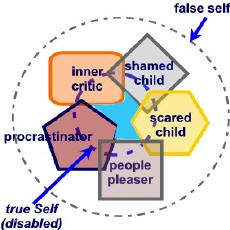

The Web address of this article is
http://sfhelp.org/gwc/false_self.htm
Updated
02-01-2015
Clicking underlined links here will open a
new window. Other links will open an informational popup,
so please turn off your
browser's popup blocker or allow popups from this nonprofit Web site.
If your playback device doesn't support Javascript, the popups may not display.
Follow underlined links after
finishing this article to avoid getting lost.
One evening an old
Cherokee told his grandson about a battle that goes on inside
people. He said, "My son, the battle is between two "wolves" inside
us all. One is Evil. It is anger, envy, jealousy, sorrow, regret,
greed, arrogance, self-pity, guilt, worry, resentment, inferiority,
lies, false pride, superiority, and ego. The other is Good. It is
joy, peace, love, hope, serenity, humility, kindness, benevolence,
empathy, humor, generosity, truth, compassion and faith.
The grandson thought for a minute and then asked his grandfather:
"Which wolf wins?"
The old Cherokee simply replied, "The one you feed."
This brief YouTube video previews what you'll find in this article:
The intro mentions eight self-improvement lessons in this site. I've
reduced that to seven.
This is one of a
series
of articles on Lesson 1in
this nonprofit Web site - (a) free your
true Self
to guide you in calm and conflictual times, and (b)
reduce
significant psychological wounds. This article describes the primary wound -
being controlled by "false selves." This may cause up to five additional
wounds.
This article assumes you're
familiar with...
the
intro to this site and the
premises underlying it
the [wounds + unawareness] cycle that
may be stressing your home and family
What is a "False Self"?
"Falseself" means two or more personality subselves that activate from some life event, and
take over leadership from the
wise part of our
brain called (here) our true Self (capital "S").When that
happens, your thoughts, perceptions, and feelings are what those excited
subselves feel, not
what your Self perceives or feels. It's likely that the
"demons" and "evil spirits or gods" described in many cultures across the centuries refer to
harmful false selves.
When you're controlled
by a false self, your naturally-talented Self is disabled - i.e. s/he is blocked from
making instinctively wise, short and long-term decisions. The
short-sighted, comfort-seeking subselves who have taken over
(the false self) usually make less wise and healthy decisions, like
rookies trying to run a professional team.
A typical false self will cause the composite feelings, beliefs, perceptions,
and thoughts of one or more
Inner Kids plus any
Guardian
subselves that are devoted
to each of them ("My Critic, my Food-addict, my Perfectionist, and my
Catastrophizer are all trying to
control me now - Help!")

Before personal wound-recovery progress,
many Inner Kids and Guardians don't know the Self is available
to lead; or they do know, but
don't trust the Self's judgment and competence.
That's often because against all logic, they're living in the
(traumatic) past.
When we're young, our true Self hasn't learned much about the world, so
other subselves have no reason to trust its wisdom and judgment. They must
rely on each other and the subselves who control our caregivers. So one
aspect of "maturing" is having our diligent subselves realize that the
resident true Self has gained much knowledge and wisdom, and now is
an effective leader in all situations.
Doing effective
inner-family therapy can
accelerate this acceptance and trust over time,
and harmonize all subselves to (usually) follow the Self's wise lead. As
this happens, people increasingly describe
feeling a mix of
these emotions in calm and stressful situations
My experience is that most adults would not
describe their lives with words like these.Reflect on the past
several weeks or months of your life. What adjectives would best describe them? How
about stressed, rushed, distracted,hassled, unfocused, anxious,
guilty, confused,
superficial, frustrated, angry, numb,
depressed, apathetic, empty, and/or insecure?.
The more of these that fit, the more likely that your
thoughts, perceptions, and actions have often been controlled by one or more well-meaning
false selves.
To help prepare and motivate you and others to do Lesson 1
(psychological-wound assessment and reduction), here's some perspective on "living from a false self."
I write this after
23 years of doing
inner-family therapy with scores of men and women trying to improve their lives and
relationships by harmonizing their talented
team of subselves.
I also write from personal experience as a recovering
Grown Wounded Child
(GWC).Prior to breaking life-long denials in 1986, my life
was mostly controlled by my false selves - and I was completely unaware of
that and what it meant.
That has changed dramatically since I began personal wound-reduction
("recovery").
The Master Wound:
Being Controlled by "False-selves"
Women and men
who survive a
low-nurturance childhood and are ruled by protective false selves often know no
other way of life.To most of us
GWCs, false-self dominance is
normal.To
imagine life feeling like these
true-Self traits seems like
science fiction, unattainable in real life. (Do you agree?)
Living from false selves probably does not
mean you have a "multiple personality."A common nervousreaction
when "your inner family of subselves" is proposed is to associate it with the dramatic stories
of "Sibyl," "The Three Faces of Eve," or "When Rabbit
Howls."
Social
psychologists estimate that about 5% of our population
are extremely dis-integrated (split) people with what psychiatrists now call "Dissociative
Identity Disorder" (DID). Such people have very distinct symptoms.
The great majority of us have moderately-split
personalities and fall far
short of having DID.
Can kids be controlled by
false selves?Absolutely.
If a young child's main caregivers, role models, mentors, and companions are
not consistently directed by their true
Selves then the child is probably
governed by other protective subselves much or all the time.
This is likely
because the child's Self (capital "S") has not had much life experience to
strengthen her or his wisdom. From this perspective, "growing up" really
means "gradually shifting your subselves' trust from
adults' ruling subselves to your own true Self."
To begin to assess whether you
are
often controlled by tireless,
protective false selves, explore and study
this,
and then return here. To fully assess yourself for
psychological wounds, follow the suggestions here
after you finish this.
The more GWC traits that someone has, the
more likely their Self (capital "S") is often disabled, and personal
wound-reduction is
merited.
These GWC symptoms are so widespread that they're accepted as normal. True-Self
symptoms are uncommon. Note that if false selves control
you now, they will probably distort your self-evaluation (e.g. minimize
,intellectualize, deny) of these clues.
Do you feel like your Self is
guiding
your personality (other subselves) now?
If you feel your true Self
reviewed these
symptoms and you have "too
many" of them, then learn more about wound-healing options. after reading this
If you feel a
child or other adult has too many of
these symptoms, follow the links. For a full exploration of psychological
wounding and recovery, read the Lesson-1 guidebook "Who's
Really Running Your Life?" (4th ed.; Xlibris.com, 2011) and
related titles. The
prior editions contain cross-reference and other errors.
Self-improvement
Lesson 1 aims to help troubled adults assess for significant
false-self dominance and
wounds in themselves and
other important adults and kids. Where
there are significant signs of these wounds, Lesson 1 provides an
experience-based framework for helping each other evolve and work an effective personal recovery
plan - "parts work," or
inner-family therapy. That aims to harmonize your team of subselves under the expert leadership
of your true Self and
Higher Power over time.
Options: invest some time reflecting and/or
journaling about your
reactions to what you just read. Learn the set of
true-Self traits, and try imagining them
describing most days of your life. Core question:
are you or someone you care
about often dominated by false selves (wounded)?
If so, what does thatmean?
If
you're skeptical about personality subselves, read my letter to you, and then try this safe, interesting
exercise after you finish here. Note that
almost 80% of
site visitors who answer this anonymous poll say they believe in subselves "without
question."
For more perspective, read this research summary on "bad
habits." For options on
freeing your true Self, see this
after you finish here.
Recap
This article
describes an epidemic,
inherited psychological
wound that seem to come from early-childhood abandonment,
neglect, and abuse ("trauma"). The
wound is "personality fragmenting and false-self dominance," This
lethal condition promotes
excessive shame, guilts, fears, reality distortions, and trust imbalances. People with all
of these may inherit another wound - difficulty
feeling,
empathizing,
loving, and bonding with some or all other people.
The article provides links to common symptoms of false-self dominance and
what that can mean. It also refers you to articles on
wound reduction ("recovery").
Pause, breathe, and reflect - why did you read this article? Did you get
what you needed? If not, what do you need? Who's
answering
these questions - your
true Self,
or
''someone else?''